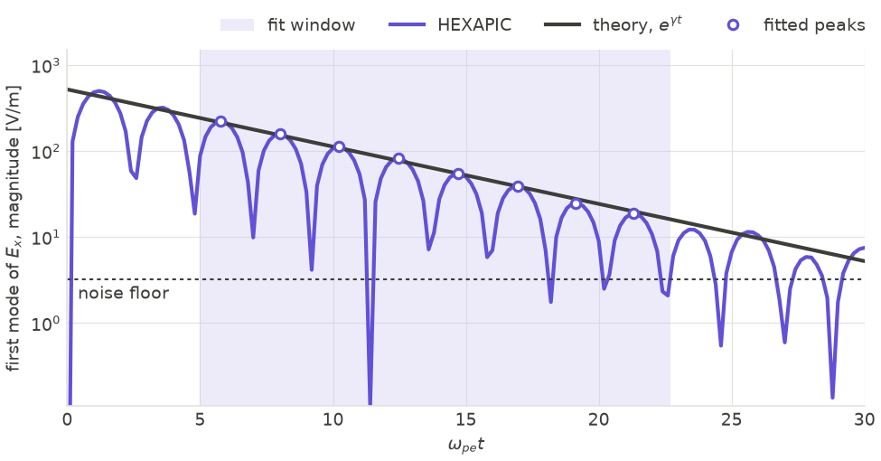

Landau damping#
A Langmuir wave is an oscillation of the electrons of a warm plasma against the ions. Without any collisions it still damps: the electrons that move nearly as fast as the wave take energy from it [Landau, 1946]. A fluid model has no such damping, so the case tests that the particles carry the velocity distribution correctly. The damping is measured over a few e-folds, until the wave sinks into the noise of the particles. The case therefore needs many particles.
Setup#
The thermal speed is \(v_{th} = \sqrt{T_e/m_e}\), the Debye length \(\lambda_D = v_{th}/\omega_{pe}\), and \(k\) is the wave number.
Domain |
0.934 mm × 0.117 mm, periodic in \(x\) and \(y\); one wavelength long, \(k\lambda_D = 0.5\) |
Grid |
64 × 8 cells of 14.6 µm (\(0.196\,\lambda_D\)); the problem is 1-D along \(x\) |
Electrons |
\(10^{16}\ \mathrm{m^{-3}}\), Maxwellian, \(T_e = 1\) eV: \(v_{th} = 4.19\times10^{5}\) m/s, \(\lambda_D = 74.3\) µm |
Ions |
H⁺, \(10^{16}\ \mathrm{m^{-3}}\), cold, moved every 10th step |
Start |
8 slabs along \(x\); the electrons of slab \(j\) drift at \(u_0 \sin(k x_j)\) along \(x\), where \(x_j\) is the middle of the slab and \(u_0 = 0.05\,v_{th}\) |
Particles |
131072 per cell in each species, \(6.7\times10^{7}\) in all; the electrons start on the ions’ positions |
Frequency |
\(\omega_{pe} = 5.64\times10^{9}\) rad/s |
Time step |
\(1.77\times10^{-11}\) s (\(\omega_{pe}\,\Delta t = 0.1\)) |
Run |
300 steps (\(\omega_{pe} t = 30\)), output every 2 steps, no charge smoothing |
Field solver |
GMGa3, the 2-D multigrid; relative tolerance \(10^{-5}\) |
Cost |
about 80 s on one NVIDIA A100, 7 GB of its memory, 4 GB of output |
A load has one drift velocity, so the sine of the start is built from slabs. The first Fourier mode of this staircase is a standing Langmuir wave. Its higher modes have \(k\lambda_D \ge 3.5\) and damp within a plasma period.
Most of the output is the particles of the first step, which HEXAPIC always
writes. The log warns omega_pe dt = 0.283: this check adds the densities of
the eight loads of the electrons, although they fill different slabs. The
value of the case is 0.1.
Running#
python examples/basic_plasma/landau_damping/case.py runs/landau_damping --run
python examples/basic_plasma/landau_damping/analyze.py runs/landau_damping
case.py writes runs/landau_damping/case.toml and, with --run, runs
build/HEXAPIC on it (--hexapic names another binary). case.toml beside
the script is the same case, for a run without Python. analyze.py prints
the damping rate and the frequency and writes results.json and the figure
into the run’s directory.
Option of |
|
|---|---|
|
run HEXAPIC on the case |
|
write the frames that HEXAPIC / VIZ shows during the run |
|
the seed of the random numbers |
|
the particles per cell of each species (131072) |
|
the largest drift of the start, \(u_0 / v_{th}\) (0.05) |
Results#
Damping rate and frequency against theory#
A wave \(\propto e^{i(kx - \omega t)}\) in Maxwellian electrons over cold ions has the complex frequency \(\omega\) that solves the dispersion relation
where \(Z\) is the plasma dispersion function [Fried and Conte, 1961] and
\(\omega_{pi}\) the plasma frequency of the ions. The root with the smallest
damping is the Langmuir wave. Its real part is the frequency and its
imaginary part the damping rate \(\gamma < 0\). analyze.py computes the root
with Newton’s iteration, with \(Z(\zeta) = i\sqrt{\pi}\,w(\zeta)\) from the
Faddeeva function \(w\) of SciPy. For \(k\lambda_D = 0.5\) and fixed ions it is
\(\omega = (1.4157 - 0.1534\,i)\,\omega_{pe}\). With protons it is
\((1.4158 - 0.1533\,i)\,\omega_{pe}\), and the comparison uses this value.
The start gives a standing wave with \(E_x \propto \sin(kx)\). analyze.py
takes the sine part of the first Fourier mode of \(E_x\). The damping rate is
the slope of a line through the logarithm of the peaks of its magnitude. The
frequency follows from the mean distance of its zero crossings. The cosine
part of the mode has no wave. Its root mean square over the second half of
the run is the noise floor.
The fit window starts at \(\omega_{pe} t = 5\). Before that, the other roots of the dispersion relation contribute: the next one, \((1.79 - 1.14\,i)\,\omega_{pe}\), is below 1 % of the wave from there on. The window ends where the line through the peaks comes down to 5 times the noise floor.

The magnitude of the first mode of \(E_x\) in one run. The black line has the slope of the theory. The dashed line is the noise floor.
The noise differs from seed to seed, so the result is the mean over six seeds:
for s in 1 2 3 4 5 6; do
python examples/basic_plasma/landau_damping/case.py runs/landau_damping_$s --seed $s --run
done
python examples/basic_plasma/landau_damping/analyze.py runs/landau_damping_?
\(\gamma / \omega_{pe}\) |
\(\omega / \omega_{pe}\) |
|
|---|---|---|
HEXAPIC, 6 seeds |
\(-0.156 \pm 0.009\) |
\(1.405 \pm 0.013\) |
Theory |
\(-0.1533\) |
1.4158 |
The damping rate is 1.6 % above the theory in magnitude and the frequency 0.75 % below it. The numbers after \(\pm\) are the standard deviations of single runs. The mean of six runs is uncertain by 2.3 % in \(\gamma\) and by 0.4 % in \(\omega\), so the damping rate agrees within the uncertainty, and the frequency is low by two standard errors.
Two things limit the measurement, and they pull in opposite directions.
The noise floor ends the fit window. Electrons on the ions’ positions give no field at the start, but the thermal motion mixes the positions within a few plasma periods. The floor is then 0.4 % of the wave’s first amplitude with 131072 particles per cell, and 0.9 % with 32768: it falls with the square root of the number of particles. The window covers about 3 e-folds of the wave, 9 or 10 peaks. At its end the noise changes a peak by up to 20 %.
A larger wave would rise further above the noise, but it is no longer linear. The electrons that move with the wave are trapped in it. The damping then weakens and the frequency falls. Single runs with the same seed show this:
\(u_0 / v_{th}\) |
0.05 |
0.1 |
0.2 |
|---|---|---|---|
\(\gamma / \omega_{pe}\) |
\(-0.151\) |
\(-0.147\) |
\(-0.119\) |
\(\omega / \omega_{pe}\) |
1.397 |
1.377 |
1.346 |
At \(u_0 = 0.05\,v_{th}\) the density changes by 1.7 %. The trend of the table suggests that the low frequency of the case is partly this effect and not only noise. A smaller wave with more particles would decide it, at a higher cost.
Files#
|
the case as a PICMI script |
|
the case as |
|
the root of the dispersion relation, and the damping rate and frequency from one or several runs |
|
the figure above, as |
|
the sources of the theory |
The script#
case.py
#!/usr/bin/env python3
"""landau_damping: a Langmuir wave in a warm, collisionless plasma damps on the electrons that move with it.
python case.py DIR # DIR/case.toml
python case.py DIR --run # and HEXAPIC on it (build/HEXAPIC; --hexapic: another), into DIR/output
python case.py # the case.toml beside this script
A periodic box, one wavelength long, of Maxwellian electrons over cold ions,
with k lambda_D = 0.5. A load has one drift, so the wave is started from
SLABS slabs along x: the electrons of slab j drift at U0 sin(k x_j), x_j the
slab's middle, on the ions' positions (no charge at the start). The first
mode of this staircase is a standing Langmuir wave; its higher modes damp
within a plasma period. analyze.py takes the first mode of E_x: its
envelope gives the damping rate, its zero crossings the frequency.
The particles' noise ends the measurement, so there are many per cell
(--particles-per-cell N: another number). --seed N is the seed of the load:
the result is the mean over several. --drift X sets U0 = X v_th, to check
that the wave is linear. --live writes the frames HEXAPIC / VIZ shows
during the run.
"""
import argparse
import math
from pathlib import Path
from hexapic import picmi
ap = argparse.ArgumentParser(description="Landau damping: case.toml")
ap.add_argument("dir", nargs="?", type=Path)
ap.add_argument("--particles-per-cell", type=int, default=131072, help="of each species (default 131072)")
ap.add_argument("--drift", type=float, default=0.05, help="the largest drift of the start over the thermal speed (default 0.05)")
ap.add_argument("--seed", type=int)
ap.add_argument("--live", action="store_true")
ap.add_argument("--run", action="store_true")
ap.add_argument("--hexapic", type=Path, help="the binary --run runs (default build/HEXAPIC)")
args = ap.parse_args()
HERE = Path(__file__).resolve().parent
N0 = 1e16 # the density [m^-3]
TE = 1.0 # the electrons' temperature [eV]
K_LAMBDA_D = 0.5 # the wave number times the Debye length
NX, NY = 64, 8 # the cells; the box is one wavelength long
SLABS = 8 # the slabs of the start
U0 = args.drift # the largest drift of the start over the thermal speed
OMEGA_DT = 0.1 # the time step times the plasma frequency
T_END = 30.0 # the run's length times the plasma frequency
c = picmi.constants
w_pe = math.sqrt(N0 * c.q_e ** 2 / (c.ep0 * c.m_e))
v_th = math.sqrt(TE * c.q_e / c.m_e) # the thermal speed sqrt(T / m)
lambda_d = v_th / w_pe
k = K_LAMBDA_D / lambda_d
lx = 2 * math.pi / k
dx = lx / NX
ly = NY * dx
grid = picmi.Cartesian2DGrid(number_of_cells=[NX, NY], lower_bound=[0.0, 0.0], upper_bound=[lx, ly],
lower_boundary_conditions=["periodic", "periodic"],
upper_boundary_conditions=["periodic", "periodic"])
sim = picmi.Simulation(solver=picmi.ElectrostaticSolver(grid=grid), time_step_size=OMEGA_DT / w_pe,
max_steps=round(T_END / OMEGA_DT),
hexapic_run={"init": "local"} | ({} if args.seed is None else {"seed": args.seed}), # local: for same_positions_as
hexapic_output={"phase_space": False, "final_particles": False} | ({"live": True} if args.live else {}),
hexapic_smoothing={"x_passes": 0, "y_passes": 0}, # a measurement: no charge smoothing
hexapic_title="landau_damping",
hexapic_description="A Langmuir wave in a warm, collisionless plasma damps on the electrons "
"that move with it.")
layout = picmi.PseudoRandomLayout(n_macroparticles_per_cell=args.particles_per_cell)
def slabs(**kw):
"""A load in each slab; the electrons' with the temperature TE and the drift U0 sin(k x) of the slab's middle."""
return [picmi.UniformDistribution(density=N0, lower_bound=[j * lx / SLABS, 0.0, None],
upper_bound=[(j + 1) * lx / SLABS, ly, None],
**({"directed_velocity": [U0 * v_th * math.sin(2 * math.pi * (j + 0.5) / SLABS), 0.0, 0.0]}
| kw if kw else {}))
for j in range(SLABS)]
# the ions in the same slabs: a load takes the positions of another species' load of the same box
ions = picmi.Species(name="ions", particle_type="H", charge_state=1, hexapic_subcycle=10, initial_distribution=slabs())
electrons = picmi.Species(name="electrons", particle_type="electron",
initial_distribution=slabs(hexapic_temperature_eV=TE, hexapic_same_positions_as="ions"))
sim.add_species(ions, layout)
sim.add_species(electrons, layout)
sim.add_diagnostic(picmi.FieldDiagnostic(grid=grid, period=2))
if args.run and args.dir is None:
ap.error("--run needs a directory for the run")
print(sim.write_input_file((args.dir or HERE) / "case.toml"))
if args.run:
sim.run(**({} if args.hexapic is None else {"hexapic": args.hexapic.resolve()}))
References#
The collisionless damping of a Langmuir wave: Landau [1946]. The plasma dispersion function \(Z\): Fried and Conte [1961]. The loading of a warm plasma and the noise of the particles: Birdsall and Langdon [1991].
The reference values are not taken from a paper. analyze.py computes the
root of the dispersion relation for the case’s \(k\lambda_D\) and mass ratio
with Newton’s iteration, with \(Z\) from scipy.special.wofz. For
\(k\lambda_D = 0.5\) and fixed ions it gives
\(\omega = (1.41566 - 0.15336\,i)\,\omega_{pe}\). The case has no data from
other codes.